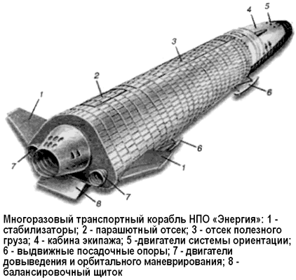

Многоразовый транспортный корабль
Головным предприятием по разработке многоразовой космической системы, аналогичной американскому транспортному кораблю «Спейс Шаттл», было назначено Научно-производственное объединение «Энергия», возглавляемое неутомимым Валентином Глушко.
Глушко пришел на место Василия Мишина не с пустыми руками. С помощью группы проектантов Химкинского двигательного КБ он создал ряд ракетных схем, которые назывались «РЛА» («Ракетные летательные аппараты») в память о проектах 30-х годов. На базе этих новых «РЛА» Глушко предложил целую космическую программу: создание тяжелой орбитальной станции, развертывание базы на Луне, организацию межпланетных экспедиций.
«РЛА» создавались путем параллельного соединения различного числа стандартных блоков. На каждом блоке предполагалось установить вновь разрабатываемый четырехкамерный кислородно-керосиновый ЖРД тягой более 700 тонн, в котором должны были найти воплощение все передовые решения в области двигателестроения и большой опыт, накопленный в ГДЛ и ОКБ-1. Оставалось разработать космический корабль.
Специалисты, разрабатывавшие космические корабли типа «Союз», знали, что, кроме очевидных преимуществ (о них мы много говорили выше), крупные крылатые корабли имеют и существенные недостатки. Главные из них — большая масса крыла и фюзеляжа, покрытых мощной теплозащитой, и необходимость постройки очень длинных и высококачественных полос для горизонтальной посадки подобных систем. В то же время широко используемые в десантных войсках парашютно-ракетные системы мягкой посадки показали не только высокую надежность при малой стоимости, но и приемлемые характеристики по точности приземления.
Поэтому, когда в 1974 году речь зашла о перспективном транспортном корабле многоразового использования, конструкторами НПО «Энергия» был предложен бескрылый космический аппарат, состоящий из кабины экипажа в передней конической части, цилиндрического грузового отсека в центральной части и конического хвостового отсека с двигательной установкой для маневрирования на орбите.

Предполагалось, что после запуска с помощью ракеты-носителя «РЛА» (или «Вулкан») и операций на орбите такой аппарат войдет в плотные слои атмосферы и, используя небольшое аэродинамическое качество на гиперзвуковых скоростях, которое имеет несущий корпус цилиндроконической формы, оснащенный воздушными и газодинамическими рулями, совершит управляемый спуск с заданной боковой дальностью и парашютную посадку на лыжи с использованием пороховых двигателей мягкой посадки на окончательном этапе.
Наиболее важное отличие такой схемы многоразового транспортного корабля вертикальной посадки (МТКВП) от крылатого корабля типа «Спейс Шаттл» — возможность крепления аппарата к ракете-носителю не сбоку, а по оси.
При этом маршевые двигатели перемещались из самого аппарата в нижнюю часть кислородно-водородного бака, а вся система превращалась в классическую ракету с параллельным расположением ступеней и полезной нагрузкой наверху.
Валентин Глушко смог разглядеть в этой идее рациональное зерно. Он понимал, что, не имея такого богатого опыта создания двигателей целиком на криогенных компонентах (жидкий водород и кислород), какой имелся у американцев, в скором времени сделать многоразовый ЖРД с нужными параметрами не удастся. А при предлагаемом расположении полезной нагрузки можно было ограничиться созданием одноразового кислородно-водородного ЖРД. Кроме того, можно было устанавливать на ракету-носитель одноразовые грузовые контейнеры различных габаритов, предназначенные для вывода на орбиту грузов гораздо большей массы, чем вмещалось в многоразовый аппарат, а также варьировать количество ускорителей, монтируемых вокруг маршевой второй ступени, с двух до восьми (боковое расположение космического аппарата с полезной нагрузкой ограничивало это число максимум четырьмя).
Однако у многоразового транспортного корабля вертикальной посадки имелся крупный недостаток — малая дальность бокового маневра при спуске. Нужна же была большая, что диктовалось элементарным соображением: в отличие от американцев с их раскиданными по всему миру авиабазами (а аварийные полосы для космических «челноков» сооружены по всему миру — от острова Пасхи до Марокко), в нашем распоряжении имелась только территория СССР, и только три полосы (на Байконуре, в Крыму и у озера Ханка на Дальнем Востоке). Сесть же на них нужно было с любого витка…
В конечном итоге свое веское слово сказали политики.
Облик американской космической системы был наконец утвержден, и сработало «официальное мнение»: американцы не глупее нас — делайте, как у них!